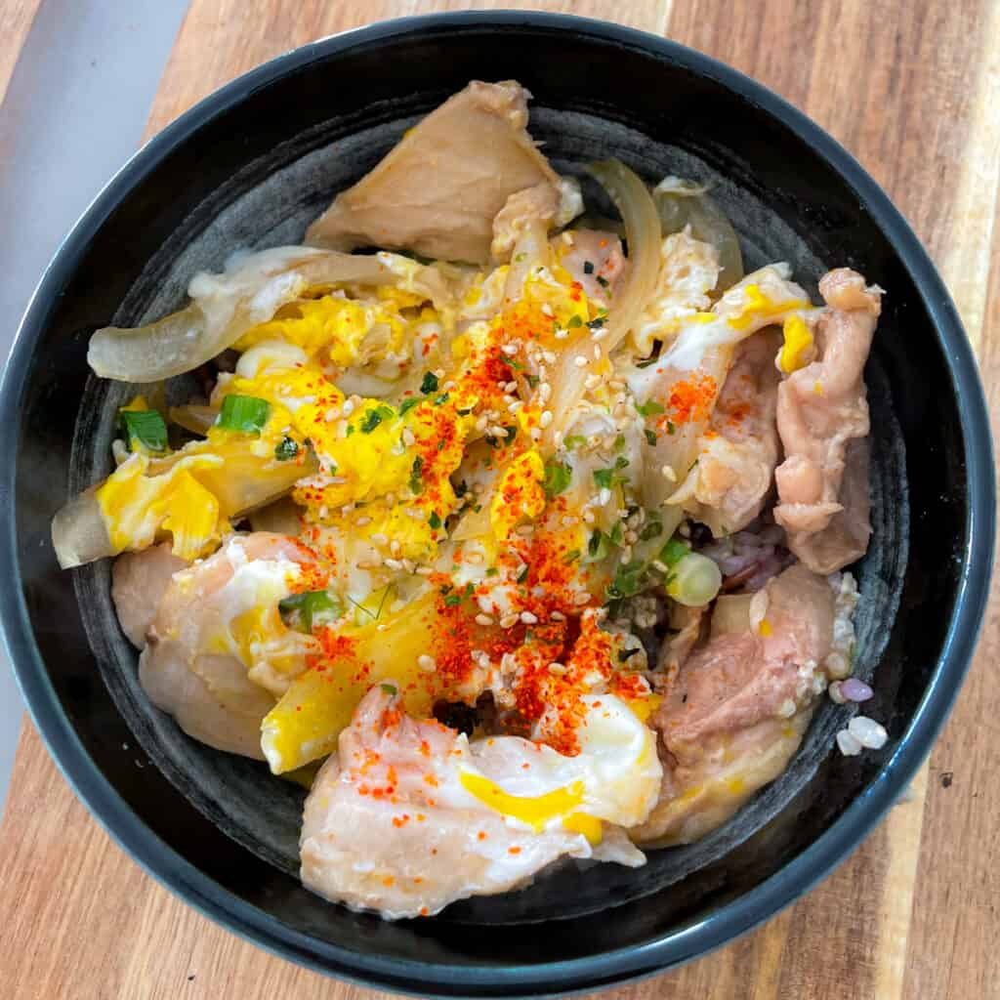

Oyakodon

Description
Oyakodon is a Japanese dish which is made from the bare ingredients of
chicken, egg and rice. It can also be called chicken donburi and is
considered a comfort dish.
Ingredients
Sauce
- 1 tsp Dashi Stock Powder
- 1 tsp Soy Sauce
- 1 tbsp Mirin
- 1 tsp Sugar
Oyakodon
- 4oz Chicken Thigh
- 2 Egg
- 1/2 Cup Rice
- 1/4 Yellow Onion
- (Optional)Green Onion, Furikake, and Togarashi
Instructions
- Prepare rice
- In small skillet, combine oyakodon sauce ingredients and bring to simmer
- Add onions and chicken pieces into the mixture
- Lower heat, crack eggs and mix. Cook until desired doneness
- Garnish with tograshi, furikake, and green onions
- Enjoy!
Return to home page